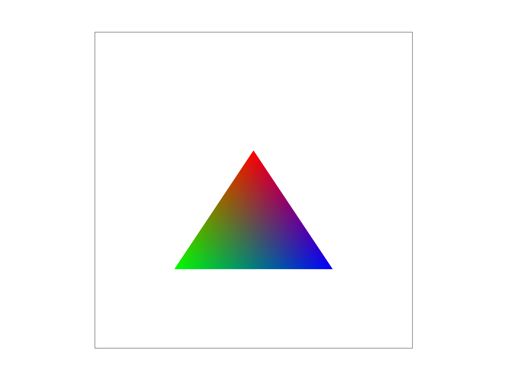
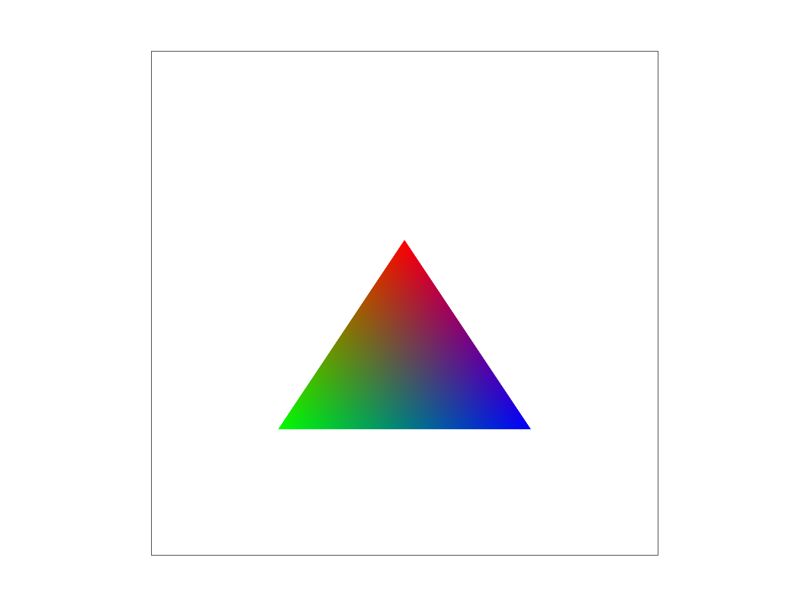

Hi! Welcome to My CS 184 Project 1 :)
Project Overview
In this comprehensive project for our computer graphics course (CS 184), we embarked on an explorative journey into the fundamentals of graphics rendering, focusing on the intricacies of rasterization, texture mapping, and sampling techniques. The project was segmented into several key tasks, each designed to deepen our understanding of graphics rendering processes and to challenge our ability to apply theoretical concepts in practical scenarios.
Key Implementations:
- Rasterization of Triangles: Developed an algorithm to rasterize triangles, identifying and filling pixels within the bounding box that fall inside the triangle. This foundational task enhanced our understanding of how shapes are rendered on a pixel grid.
- Supersampling for Antialiasing: Implemented supersampling to improve image quality by reducing aliasing effects. This technique, which involves rendering at a higher resolution and then downsampling, taught us the importance of sample rates in determining the balance between performance and visual fidelity.
- Barycentric Coordinates: Utilized barycentric coordinates for color interpolation within triangles. This method allowed for smooth color gradients and introduced us to the concept of using weighted averages for rendering.
- Texture Mapping and Sampling: Explored different pixel sampling methods—nearest and bilinear—to apply textures to shapes. This task demonstrated the impact of sampling techniques on texture quality and introduced us to texture mapping's complexities.
- Level of Detail (LOD) and Mipmapping: Implemented LOD and mipmapping to select appropriate texture resolutions based on distance. This optimization technique underscored the trade-offs between rendering speed, memory usage, and image quality.
Insights Gained:
Completing this project has been an enlightening experience, offering us a practical perspective on the computational aspects of generating 2D representations of 3D scenes. The hands-on work with rasterization and texture mapping illuminated the challenges of rendering realistic images in real-time applications. One of the most interesting insights was the significant impact that antialiasing and sampling methods have on the final image quality. Moreover, the exploration of barycentric coordinates and their application in color interpolation and texture mapping was particularly fascinating, highlighting the mathematical beauty underlying computer graphics.
Furthermore, the project allowed us to appreciate the delicate balance between computational efficiency and visual quality, especially in the context of level sampling and mipmapping. It was intriguing to see firsthand how different sampling techniques can dramatically affect rendering outcomes and performance metrics.
Task 1
Walk through how you rasterize triangles in your own words.
First, we find the maximum and minimum values of x and y to determine the bounding box of the triangle. Then, we iterate through every pixel within the bounding box and check if it's inside the triangle. Here we check for two cases: the triangle winding is counter-clockwise and the triangle winding is clockwise, since we’re unsure which case it belongs to. For both cases, we apply a point-in-triangle (or three-line test) to see if it’s in the triangle. If it passes the test in one of the cases, then the point must be inside the triangle and we rasterize the point.
Explain how your algorithm is no worse than one that checks each sample within the bounding box of the triangle.
Essentially, our method does precisely that—it checks each sample within the bounding box. So, it's on par with any algorithm that adopts this approach.
Show a png screenshot of basic/test4.svg with the default viewing parameters and with the pixel inspector centered on an interesting part of the scene.
Task 2
Walk through your supersampling algorithm and data structures. Why is supersampling useful? What modifications did you make to the rasterization pipeline in the process? Explain how you used supersampling to antialias your triangles.
Change in Data Structure: Expand the size of sample_buffer by multiplying it by the sample rate to store colour values for each sub-pixel. The indexing changes from sample_buffer [y * width + x] to sample_buffer[(((y * sqr_rate + dy) * width * sqr_rate) + x * sqr_rate + dx)], where sqr_rate = sqrt(sample_rate).
Algorithm: Taking the sample rate of 4 as an example, whenever rendering a triangle in rasterize_triangle(), I break each pixel within the bounding box into 4 smaller rectangles and pass each sub-part to the triangle test. The point for each sub-part is now (x + 1/(2*sqr_rate) + xd*1/sqr_rate, y + 1/(2*sqr_rate) + yd*1/sqr_rate), where xd and yd is the index of 4 sub-parts. If the point passes the triangle test, we index it into sample_buffer and store its corresponding colour.
In resolve_to_framebuffer(), we calculate the average colour value from all 4 subparts of each pixel and transfer the corresponding average colour to rgb_framebuffer_target.
Why helpful: It reduces sampling artifacts like jaggies and makes the line smooth by averaging multiple samples for each pixel and making diagonal lines and curves appear more natural and less pixelated.
Show png screenshots of basic/test4.svg with the default viewing parameters and sample rates 1, 4, and 16 to compare them side-by-side. Position the pixel inspector over an area that showcases the effect dramatically; for example, a very skinny triangle corner. Explain why these results are observed.
Observation: From top to bottom: 1, 4, 16. It's evident that as we increase the sampling rate, the number of jaggies decreases, and the line appears smoother. This is because rather than simply categorizing each pixel as either "passing" or "failing" the line test, we now compute the average colour value of the samples within a pixel. This method introduces a more gradual transition in colour, resulting in enhanced smoothness and reduced sampling artifacts.
Task 3
Create an updated version of svg/transforms/robot.svg with cubeman doing something more interesting, like waving or running. Feel free to change his colors or proportions to suit your creativity. Save your svg file as my_robot.svg in your docs/ directory and show a png screenshot of your rendered drawing in your write-up. Explain what you were trying to do with cubeman in words.
The cubeman is shrugging and showing his hands because he’s confused (about CS 184, absolutely). I modified the arm blocks' orientation and added new blocks to represent hands and question marks to convey his puzzled state.
Task 4
Explain barycentric coordinates in your own words and use an image to aid you in your explanation. One idea is to use a svg file that plots a single triangle with one red, one green, and one blue vertex, which should produce a smoothly blended color triangle. Show a png screenshot of svg/basic/test7.svg with default viewing parameters and sample rate 1. If you make any additional images with color gradients, include them.
Barycentric coordinates linearly interpolate values at the vertices. For instance, any point inside the triangle (with vertices A, B, C) can be represented as P = alpha*A + beta*B + gamma*C, where alpha + beta + gamma = 1 and each is larger or equal to 0. Alpha, Beta, and Gamma each represent the weights exerted by each vertex on point P, or geometrically, the proportional distance to each vertex. If a point is closer to vertex A, it’s more influenced by vertex A. As observed, in the illustration below, points around the red vertex appear red, but the very centre, with equal weights from blue, red, and green, looks closer to black.
 

Task 5
Explain pixel sampling in your own words and describe how you implemented it to perform texture mapping. Briefly discuss the two different pixel sampling methods, nearest and bilinear. Check out the svg files in the svg/texmap/ directory. Use the pixel inspector to find a good example of where bilinear sampling clearly defeats nearest sampling. Show and compare four png screenshots using nearest sampling at 1 sample per pixel, nearest sampling at 16 samples per pixel, bilinear sampling at 1 sample per pixel, and bilinear sampling at 16 samples per pixel. Comment on the relative differences. Discuss when there will be a large difference between the two methods and why.
Pixel Sampling: Pixel sampling, a crucial technique in texture mapping, involves mapping each sample pixel from the texture (which may reside in a 3D space) to a specific screen location.
Implementation: During the rasterization of a triangle, for each pixel that passes the line test, we find corresponding u, v by dot(barycentric, u) and dot(barycentric, v). Then we choose between two sampling techniques:
- Nearest sampling technique: We assign the value of the closest sample pixel. X = round(uv.x * (mip.width - 1)) Y = round(uv.y * (mip.height - 1)) And then I find mip.get_texel(x, y);
- Bilinear sampling technique: We calculate and assign the value based on the average weight of the 4 nearest sample pixels. After getting x and y as in nearest sampling technique, instead of rounding, we find ceiling and floor of x and y to get the position of 4 nearest pixels. Then we calculate the difference between x (s) and y (s) Then we apply lerp function to find the final color as in the lecture.
Relative Difference:
From top to bottom: Bilinear Sampling at 1 Sample per Pixel, Nearest Sampling at 1 Sample per Pixel, Bilinear Sampling at 16 Sample per Pixel, Nearest Sampling at 16 Samples per Pixel.<\p>
At a supersample rate of 1, bilinear sampling results in a smoother texture with fewer jaggies compared to nearest sampling. With a supersample rate of 16, bilinear sampling remains slightly smoother, though the difference narrows due to the antialiasing effects of supersampling itself. This demonstrates that the gap between the two methods is most pronounced at lower sampling rates, highlighting bilinear sampling's advantage in creating smoother textures with fewer artifacts.
Task 6
Explain level sampling in your own words and describe how you implemented it for texture mapping. You can now adjust your sampling technique by selecting pixel sampling, level sampling, or the number of samples per pixel. Describe the tradeoffs between speed, memory usage, and antialiasing power between the three various techniques. Using a png file you find yourself, show us four versions of the image, using the combinations of L_ZERO and P_NEAREST, L_ZERO and P_LINEAR, L_NEAREST and P_NEAREST, as well as L_NEAREST and P_LINEAR. Note: Choose a png that showcases the different sampling effects well.
Level Sampling: Level sampling involves generating different resolutions of images and selecting the appropriate resolution level based on distance or need, such as using higher resolution for closer objects.
Implementation: We map texture coordinates and calculate differences (du/dx, dv/dx) and (du/dy, dv/dy), then compute the level L based on these differences. Depending on the level sampling method (L_NEAREST or L_LINEAR), we select or interpolate between levels.
Comparison:
- Speed: Pixel sampling is the fastest due to a single computation per pixel, followed by mipmapping, with multiple samples per pixel being the slowest due to increased computations.
- Memory Usage: Pixel sampling requires the least memory, while mipmapping and multiple samples per pixel have higher memory requirements due to storing multiple resolutions or treating each pixel as several samples, respectively.
- Antialiasing Power: Pixel sampling has the least antialiasing power; mipmapping improves smoothness by selecting resolutions for distances; multiple samples per pixel provides the best antialiasing by averaging colors/values within each pixel.
From top to bottom: L_ZERO & P_NEAREST, L_ZERO & P_LINEAR, L_NEAREST & P_NEAREST, L_NEAREST & P_LINEAR.
Observation: The center (whiter space) shows the most distinguishable differences. P_LINEAR generates smoother color transitions compared to P_NEAREST, and L_NEAREST offers smoother transitions over L_ZERO.